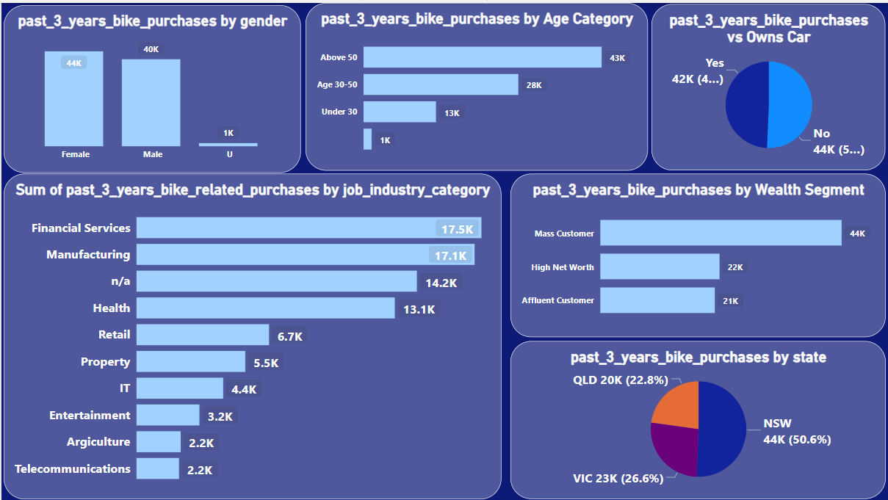

Resume
Education
- University of Engineering & Technology Peshawar
- Khyber Pakhtunkhwa
- Bechlor of Science : Computer Science
- Expected in : 09/2025
- IBM
- Coursera
- Data Analytics : IBM Data Analytst
- 7/2023
- Latamber Science College Latamber
- Khyber Pakhtunkhwa
- Intermediate: Pre-Engineering
- 09/2025
- Chokara Science School & College Chokara Karak
- Khyber Pakhtunkhwa
- High School: Natural Sciences
- 03/2018
Experience
- Data Analyst
- MeriSkill
- Present
- Data Analyst
- Forage
- Aug-2023 - Sep-2023 (2 months)
Skills
- Data Analysis
- Excel
- SQL
- Power BI
- Statistical Analysis
- Data visualization
- Dashboard Design
- Data Cleaning & Transformation
- Domain Knowledge
Portfolio
-
Sales Analysis
I have created Excel dashboard that shows the annual sales report of a retail store. The dashboard includes a graph, pie chart, and order status. The graph shows the sales of the store over the past year. The pie chart shows the sales of the store by product category. The order status shows the number of orders placed, shipped, and canceled. The dashboard also includes a table that shows the top 10 products by sales. The dashboard is well-organized and easy to read. The visualizations are clear and concise. The dashboard is a valuable tool for the retail store to track its sales performance and identify trends.

-
Past Three Years Bike Analysis For the Three Top States For Australia
This Power BI dashboard provides a comprehensive overview of bike purchases in Australia over the past three years. The dashboard includes a variety of visualizations, including charts, maps, and tables, to help you identify trends and patterns in bike purchase data.
Conclusion: This Power BI dashboard is a valuable tool for anyone who wants to gain insights into the Australian bike market. By tracking bike purchase trends and identifying patterns, you can make informed decisions about the market and better serve your customers.
